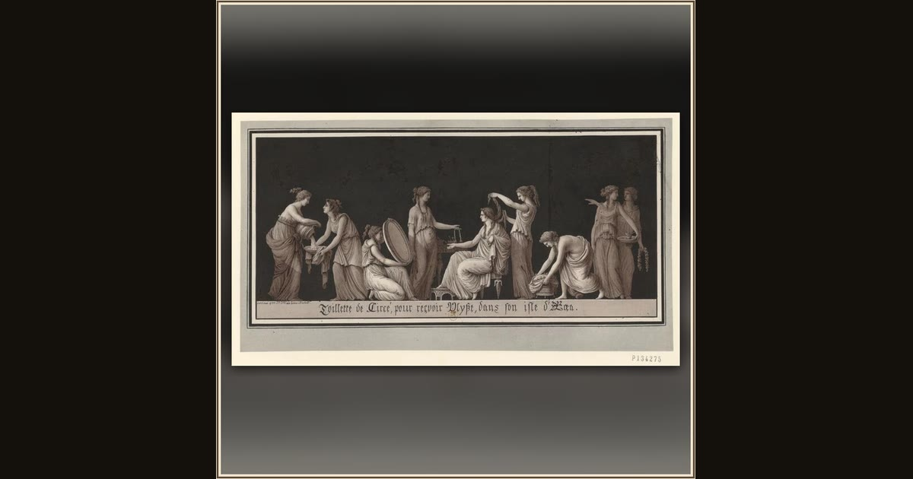

The Toilette of Circe, Awaiting Ulysses
Jean-Jacques Lequeu · 1777–1825 · Bibliothèque nationale de France · Paris, France
The enchantress Circe has her hair dressed and her chamber made ready to greet Ulysses — never guessing he carries a magic herb to beat her spells. Explore its place in Book X of the Odyssey.